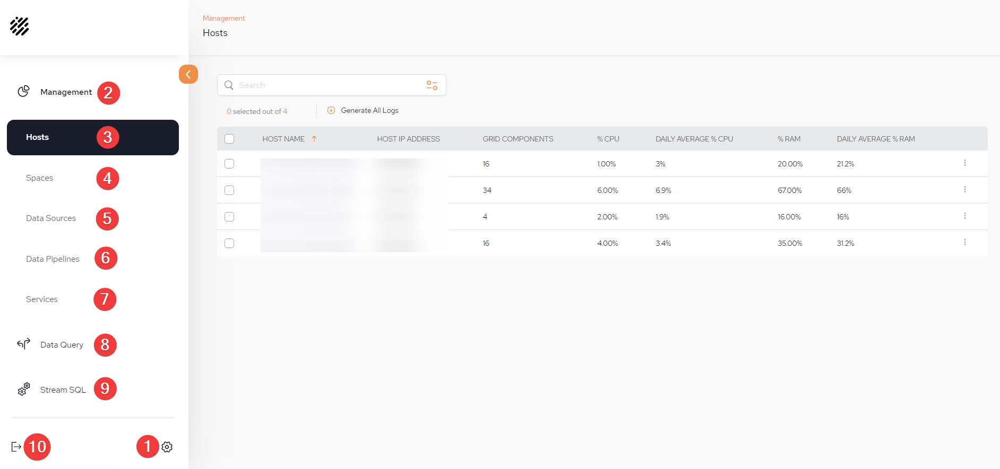

| # | Menu | Actions |
|---|---|---|
| 1 | Administration |
For users who have an ADMIN security role, this leads to the Administration menus which consist of: |
| 2 | Management | Management section of SpaceDeck |
| 3 | Hosts | The menu can be used to monitor the health of the hosts to ensure that if limits are being reached, there is an opportunity to rearrange data or increase the amount of RAM or nodes |
| 4 | Spaces | |
| 5 | Data Sources | Choose which databases to import to the IMDG. These data sources will be used to configure the data pipeline |
| 6 | Data Pipeline |
Choose which tables and fields to use View dynamic metrics and start/stop the pipeline |
| 7 | Services |
Low-Code Data Service Create and execute |
| 8 | Data Queries | Perform SQL queries on the Space or pipeline data |
| 9 | Stream SQL | StreamSQL allows to SpaceDeck to implement a low code (SQL) approach to define and operate with ad-hoc data flows, such as read from Kafka and write directly to Space or read from one Kafka topic and write to another Kafka topic. |
| 10 | Exit SpaceDeck | Click this to exit SpaceDeck |

| # | Menu | Actions |
|---|---|---|
| 1 | Administration |
For users who have an ADMIN security role, this leads to the Administration menus which consist of: |
| 2 | Management | Management section of SpaceDeck |
| 3 | Hosts | The menu can be used to monitor the health of the hosts to ensure that if limits are being reached, there is an opportunity to rearrange data or increase the amount of RAM or nodes |
| 4 | Spaces | |
| 5 | Data Sources | Choose which databases to import to the IMDG. These data sources will be used to configure the data pipeline |
| 6 | Data Pipeline |
Choose which tables and fields to use View dynamic metrics and start/stop the pipeline |
| 7 | Services |
Low-Code Data Service Create and execute |
| 5 | Data Queries | Perform SQL queries on the Space or pipeline data |
| 9 | Stream SQL | StreamSQL allows to SpaceDeck to implement a low code (SQL) approach to define and operate with ad-hoc data flows, such as read from Kafka and write directly to Space or read from one Kafka topic and write to another Kafka topic. |
| 6 | Exit SpaceDeck | Click this to exit SpaceDeck |